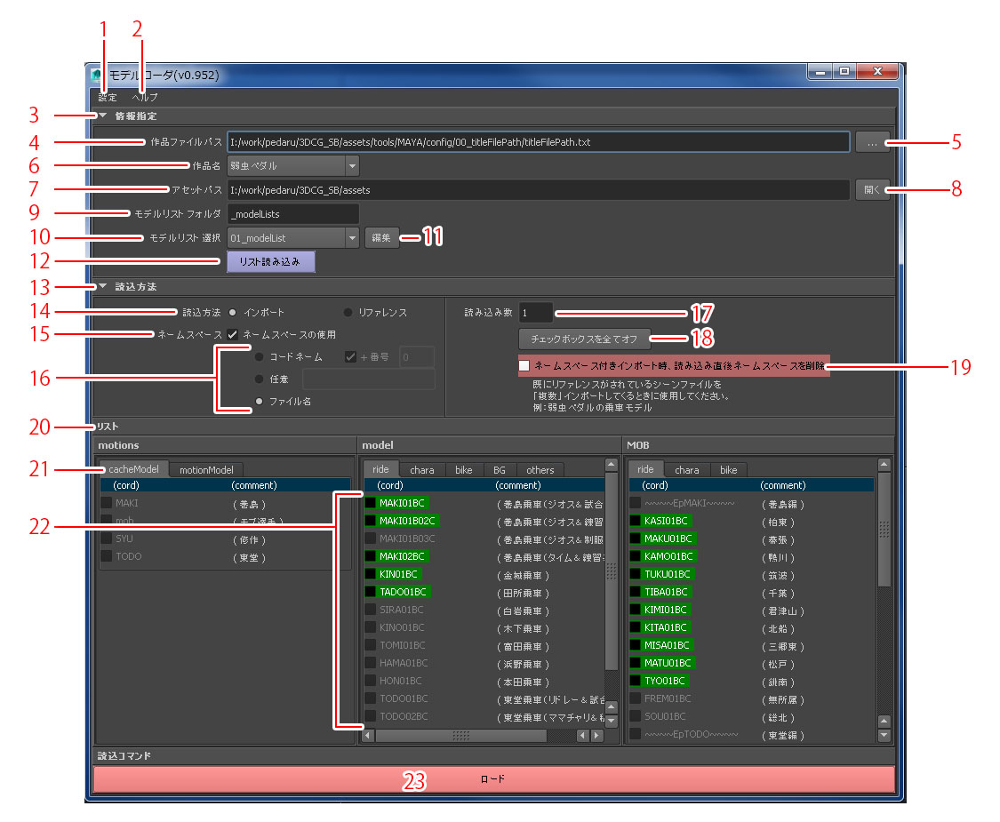

以下の図は『弱虫ペダル SPARE BIKE』のモデルリストを読み込んだ状態です

…現状使用できません。
…melファイルやmelファイル保存フォルダを開きます。
…読み込みに必要な情報ファイルを設定できます。
…作品名、アセットパス、モデルリストフォルダ名、の情報が書かれたファイルまでのフルパスが表示されます
…作品ファイルパスを指定するダイアログを開きます。
…作品ファイルパスから読み込んだ作品名を選択できます。
…作品ファイルパスから読み込んだアセットパスを表示します。
…アセットパスフォルダを開きます。
…作品ファイルパスから読み込んだモデルリストフォルダ名を表示します。
…モデルリストフォルダ内にあるモデルリストファイルを選択できます。
…選択しているモデルリストを開きます。
…選択しているモデルリストをもとにリストを作成します。
…読み込み時の設定を指定できます。
…読み込み方法をインポートとリファレンスのどちらかを指定できます。
…ネームスペースを使用する、使用しないを選択できます。
…コードネームを命名方法を選択できます。
・コードネーム …ファイル名についているコードネームをもとにネームスペースをつけます。
番号チェックボックスがオンのとき指定した番号文字列をネームスペースの最後につけます。
・任意 …指定された文字列でネームスペースをつけます。
・ファイル名 …ファイル名をネームスペースとして使用します。
…読み込む数を指定できます。
…リストの全てのモデルチェックボックスを全てオフにします。
…読み込んだとき追加されたネームスペースを削除します。
既にリファレンスがされているシーンファイルを読み込むときに使用します。
…モデルをカテゴリで分けて表示します。
…アセットフォルダ直下のフォルダをタブとして表示します。
…読み込みたいモデルにチェックすることができます。
…読み込みを開始します。